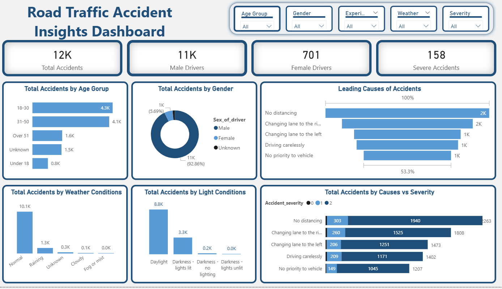
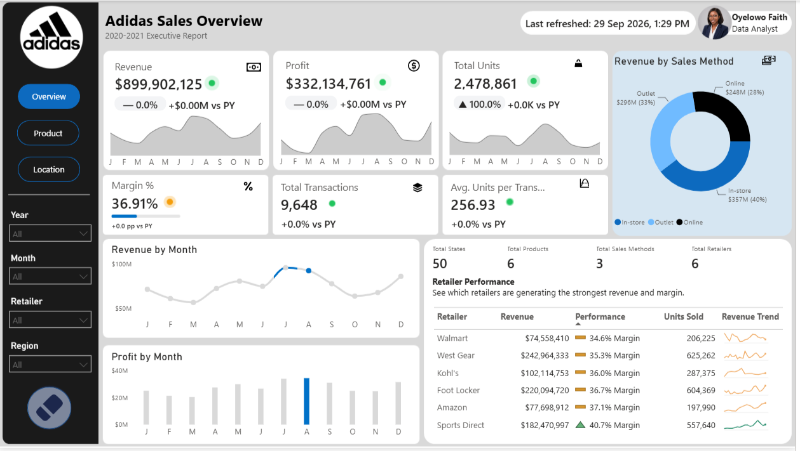
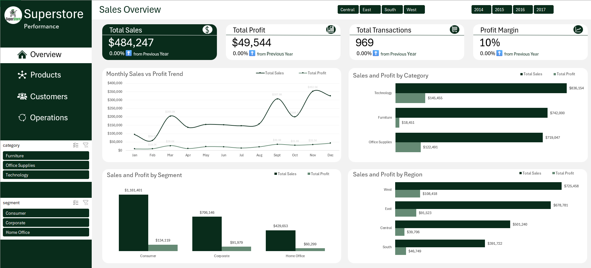

HELLO, WELCOME TO MY PORTFOLIO
I turn raw data into meaningful insights through data analysis, visualization and interactive dashboards. I use Excel, SQL and Power BI to explore data, uncover trends and support informed decisions.
Explore My ProjectsI am a Data Analyst with a background in Computer Science and practical experience in transforming data into meaningful insights. I work with Excel, SQL and Power BI to analyse datasets, develop interactive dashboards, track key performance indicators and communicate findings that support informed decision-making.
I am passionate about data-driven problem-solving, continuous learning and using analytics to help organisations understand their performance and make better decisions.
Education: B.Sc. Computer Science, Federal University Oye-Ekiti (2021–2025) — Second Class Upper Division.
Download My CV
Analysed road traffic accident data using SQL and Power BI, focusing on accident numbers, weather conditions and severity.
Tools: SQL, Power BI
View Project on Github
An interactive Power BI dashboard analysing Adidas sales performance through data modelling, DAX, KPI development and data visualisation.
Tools: Power BI Desktop, Power Query, DAX
View Project on Github
An Excel-based data analysis project focused on exploring Superstore sales data and presenting findings through a structured sales report.
Tool: Microsoft Excel
View Project on GithubI am open to Data Analyst opportunities, collaborations and professional connections. Feel free to reach out.
Email: Send Me an Email
LinkedIn: Connect with me on LinkedIn
GitHub: Explore my GitHub projects